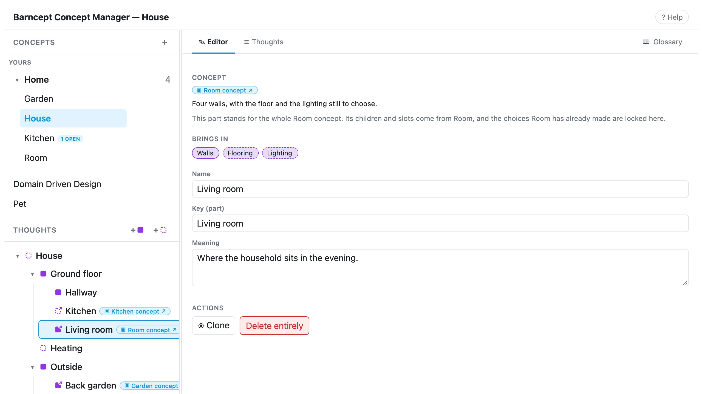
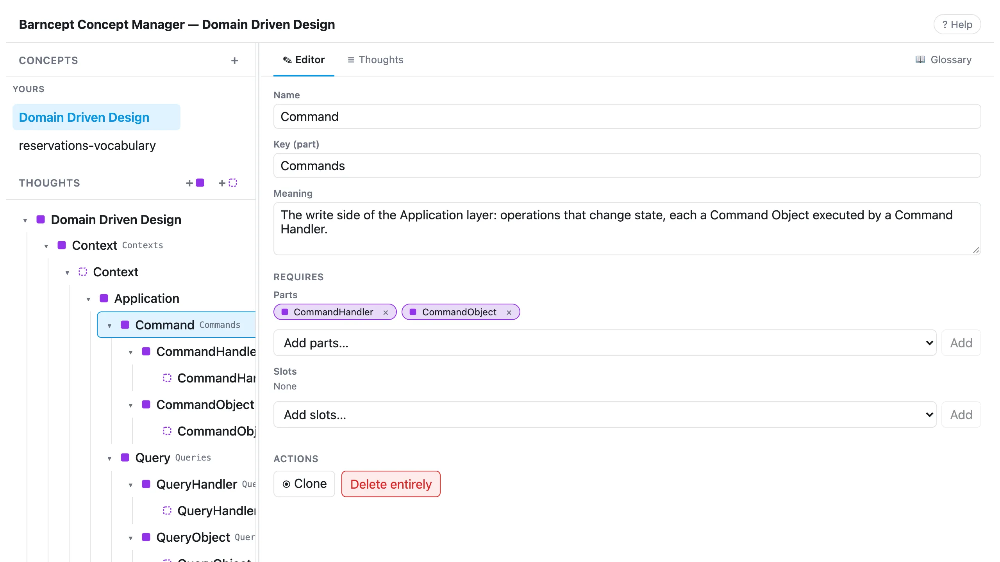

Your understanding outlives your code.
Code is rewritten, frameworks come and go, folders get reshuffled. What lasts is how you understand the domain. With Barncept you come up with a concept, fill it with your thoughts, then reuse those concepts in bigger concepts. Every thought has a plain meaning, every change is checked so a tree is never left invalid, and the whole can be realised in any way you like.

Thoughts that explain themselves.
Every thought in a concept has a name and a meaning written in plain words, and its place in the tree says what it holds and what holds it. Months later, anyone can open the graph and understand not just what exists, but what each thing is for. Each concept’s Glossary puts every term and its meaning on one page, so a newcomer, or an AI agent, can learn the vocabulary in one read.
A change that would break it is refused.
Checking that every change is valid is Barncept’s core job. A tree is never left half-broken: a reference to something that isn’t there, a loop, or a thought nothing can reach is refused, with a message that says why. That makes it safer to drive than the file underneath, whether a person, a program or an AI agent is doing the driving.
A file that was broken outside Barncept fails loudly when it is read, and says what is wrong and where.
Before any change is kept
- Add a Porch to Outsidekept
- Put Hallway inside itselfrefused: a loop
- Give Hallway a Cellar nobody has describedrefused: not there
One concept manager. Clear boundaries.
Barncept manages reusable concept structures through a generic interface. Barnark uses it for architecture templates; Barnspec uses it for Area of Business, Role and Story structure. Each tool keeps its own API and domain rules, so Barncept does not need to know what either tool means by those structures.
- Barnarkarchitecture rules and folder checks
- Barnspecbusiness rules and project management
- Barnceptgeneric concept structure management
Small concepts, built into bigger ones.
A concept can borrow another one whole. A House borrows the Room concept three times, a Garden once, and a Kitchen that has a Room of its own. Write a thing once, and everything built on it follows when it changes. Choices made inside a borrowed concept come with it and stay put, so each decision is made in one place.
Because a borrow is live, a change can break the concepts built on it. Barncept checks first: before you save or delete, it tells you which concepts would stop working, and you decide whether to go ahead.
House · in the Home group
- Living roomborrows Room
- Main bedroomborrows Room
- Spare bedroomborrows Room
- Back gardenborrows Garden
- Kitchenborrows Kitchen, built on a Room
- Remove Room’s Lightingwould break House
House chose spotlights for its kitchen, which is a Room too, so Barncept asks before Lighting goes.
One model. Any shape.
Barncept never decides what a graph becomes. A folder structure, a diagram and a set of documents are each one possible realisation, never the model itself. Turn the same graph into real folders, an architecture to check code against, or whatever you need next.
Four come built in, each for whoever reads it: a document for people, folders with a README in each for developers and tools, a diagram for a README, a pull request or a slide, and the plain tree for a quick look. View and download any of them in the browser, or export them from the command line.
Every Barnark architecture template is written as a Barncept concept, and can be opened and edited in exactly the same way.

How it works underneath.
Everything above, in more detail, for when you want it.
The three kinds of thoughtParts, Slots and Choices
- Part: a part that is always there, and can hold other thoughts beneath it, such as
ApplicationorDomain. - Slot: a slot that has to be filled, such as
AggregateorCommand. - Choice: a concrete thing that fills one slot, such as
BasketfillingAggregate.
The editor marks a part with a solid square, a slot with a dashed one waiting to be filled, and a choice with a puzzle piece. A thought that borrows another concept wears a corner arrow too.
Concepts, blank and settledPortable vocabulary, and the things that use it
A concept is a broad, structured collection of thoughts about one thing, kept as one file, with a name and a description of what it is for. The concept is itself the top of its tree: a part, always there wherever it is borrowed, or a slot, which a choice fills.
A concept with every slot still open is a blank plan, a reusable vocabulary. Once choices fill its slots it is settled, and resolves from an entry point, a choice no other choice picks, into a concrete, named tree. A dinner party, settled for Friday:
Friday with the Hendersons
|
+--Tomato soup
+--Mushroom risottoA bad concept fails loudly. A badly written file lists every fault at once, each with where it is, and a broken graph names the missing reference or the loop it found.
Keeping many concepts in orderGroups, and a check for CI
Give related concepts the same group and the editor lists them together under one heading, so House, Room, Kitchen and Garden sit under Home. A group only tidies the list: it changes nothing about borrowing.
barncept check composes every concept and prints one line each: settled, open (with the slots still open) or broken (with what broke it). It fails on a broken concept or an unreadable file, so it fits in CI. Open slots don’t fail it, because a plan left open is often deliberate.
$ vendor/bin/barncept check
Checking the concepts in /path/to/project/concepts
Garden: open: nothing chosen yet
House: broken: Concept "Kitchen" references concept "Room" but no such concept is registered
Kitchen: broken: Concept "Kitchen" references concept "Room" but no such concept is registered
Pet: open: nothing chosen yetExporting a conceptA document, folders or a diagram
Pick one realisation of a concept and export it. Nothing is ever overwritten: a file goes to a path that does not exist yet, and folders to an empty one.
$ vendor/bin/barncept export House --as=markdown --to=docs/house.md
$ vendor/bin/barncept export House --as=folder --to=house
$ vendor/bin/barncept export House --as=mermaid
flowchart TD
n1["12 Orchard Lane"]
n2["Ground floor"]
n1 --> n2Realising a graph as a PHP codebaseScaffold it, then check it still matches
Barnscaff, Barncept’s companion, turns a resolved graph into a PHP codebase’s directories and files, and scans an existing folder to check it still matches.
$ vendor/bin/barnscaff scaffold House "Orchard Lane" ./generated --apply
$ vendor/bin/barnscaff scan House "Orchard Lane" ./generated
Conformant.From PHPRead a folder of concepts, compose one, resolve it, export it
$registry = new ConceptRegistryFactory()->create('concepts');
$concept = new ConceptComposerFactory()->create($registry)
->compose($registry->get('House'));
$instance = new ResolverFactory()->create()
->resolve($concept, $concept->entryPoints()->first());
$document = new ProjectorRegistryFactory()->create()
->get(ProjectionKind::new('markdown'))
->project($instance);
new ProjectionWriterFactory()->create()->write($document, 'house.md');Open your concepts in the browser.
Barncept needs PHP 8.5, Composer and the ds extension. Set up your project once, then open the editor.
$ vendor/bin/barncept init
$ vendor/bin/barncept guiInstallationInstall from Packagist
Require Barncept, its command line and its browser app:
$ composer require rmb32/barncept rmb32/barncept-cli rmb32/barncept-gui